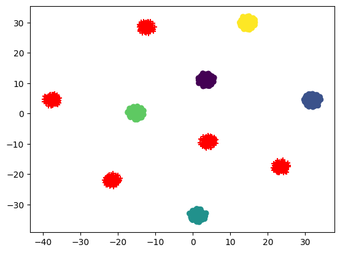
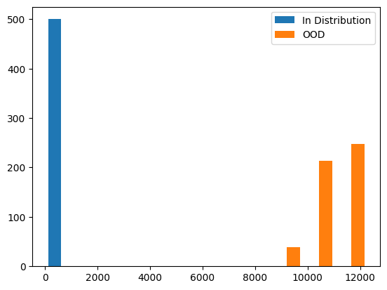

flowchart LR
A[Feature\nEmbeddings] --> C{OOD Detection}
B[In Distribution\nLabels] --> C
C --> F[Uncertainty Score]
F --> D[Out of Distribtuion]
F --> E[In Distribtuion]
Visual overview of how the pipeline looks like.
flowchart LR
A[Feature\nEmbeddings] --> C{OOD Detection}
B[In Distribution\nLabels] --> C
C --> F[Uncertainty Score]
F --> D[Out of Distribtuion]
F --> E[In Distribtuion]
compute_mean_and_covariance (embdedding:numpy.ndarray, labels:numpy.ndarray)
Computes class-specific means and a shared covariance matrix.
| Type | Details | |
|---|---|---|
| embdedding | ndarray | (n_sample, n_dim) n_sample - sample size of training set, n_dim - dimension of the embedding |
| labels | ndarray | (n_sample, ) n_sample - sample size of training set |
| Returns | Tuple | Mean of dimension (n_dim, ) and Covariance matrix of dimension(n_dim, n_dim) |
compute_mahalanobis_distance (embdedding:numpy.ndarray, means:numpy.ndarray, covariance:numpy.ndarray)
Computes Mahalanobis distance between the input and the fitted Guassians. The Mahalanobis distance (Mahalanobis, 1936) is defined as
\[distance(x, mu, sigma) = sqrt((x-\mu)^T \sigma^{-1} (x-\mu))\]
where x is a vector, mu is the mean vector for a Gaussian, and sigma is the covariance matrix. We compute the distance for all examples in embdedding, and across all classes in means.
Note that this function technically computes the squared Mahalanobis distance
| Type | Details | |
|---|---|---|
| embdedding | ndarray | Embdedding of dimension (n_sample, n_dim) |
| means | ndarray | A matrix of size (num_classes, n_dim), where the ith row corresponds to the mean of the fitted Gaussian distribution for the i-th class. |
| covariance | ndarray | The shared covariance matrix of the size (n_dim, n_dim) |
| Returns | ndarray | A matrix of size (n_sample, n_class) where the (i, j) element corresponds to the Mahalanobis distance between i-th sample to the j-th class Gaussian. |
OODMetric (train_embdedding:numpy.ndarray, train_labels:numpy.ndarray)
OOD Metric Class that calculates the OOD scores for a batch of input embeddings. Initialises the class by fitting the class conditional gaussian using training data and the class independent gaussian using training data.
| Type | Details | |
|---|---|---|
| train_embdedding | ndarray | An array of size (n_sample, n_dim) where n_sample is the sample size of training set, n_dim is the dimension of the embedding. |
| train_labels | ndarray | An array of size (n_train_sample, ) |
OODMetric.compute_rmd (embdedding:numpy.ndarray)
This function computes the OOD score using the mahalanobis distance
| Type | Details | |
|---|---|---|
| embdedding | ndarray | An array of size (n_sample, n_dim), where n_sample is the sample size of the test set, and n_dim is the size of the embeddings. |
| Returns | ndarray | An array of size (n_sample, ) where the ith element corresponds to the ood score of the ith data point. |
Here is an example where we generate 1000 samples having a 1024 dimensional embedding belonging to 10 clusters. Using the samples from last 5 cluster as test embeddings or ood embeddings and rest used as train embeddings
tsne = TSNE(n_components=2).fit_transform(x)
x_train_tsne = tsne[np.where(y < (n_centers - 5))]
x_test_tsne = tsne[np.where(y >= (n_centers - 5))]
plt.scatter(x_train_tsne[:, 0], x_train_tsne[:, 1], marker="o", c=train_labels)
plt.scatter(x_test_tsne[:, 0], x_test_tsne[:, 1], marker="+", c="red")<matplotlib.collections.PathCollection>
test_eq(type(train_embedding), np.ndarray) # check that embeddings are a numpy array
test_eq(type(train_labels), np.ndarray) # check that labels are numpy array
test_eq(train_labels.dtype, int) # check that labels are integers only
test_eq(train_labels.ndim, 1) # check that labels is one dimensional
test_eq(train_embedding.shape[0], train_labels.shape[0]) # check n_samples are sametest_eq(ood.means.shape[0], len(np.unique(train_labels))) # for each unique class, we should get one mean embedding
test_eq(ood.means.shape[1], train_embedding.shape[1]) # size of mean vector should be the same of the size of embedding
test_eq(ood.covariance.shape[0], train_embedding.shape[1]) # covariance matrix should be of size n_dim, n_dim
test_eq(ood.covariance.shape[1], train_embedding.shape[1])
test_eq(ood.means_bg.shape[0], 1)
test_eq(ood.means_bg.shape[1], train_embedding.shape[1])
test_eq(ood.covariance_bg.shape[0], train_embedding.shape[1])
test_eq(ood.covariance_bg.shape[1], train_embedding.shape[1])By looking at the scores, we can get an idea of setting the threshold for classifying any datapoint as out of distribution. Below histogram shows a clear idea of what OOD Relative Mahalanobis distance look like.
